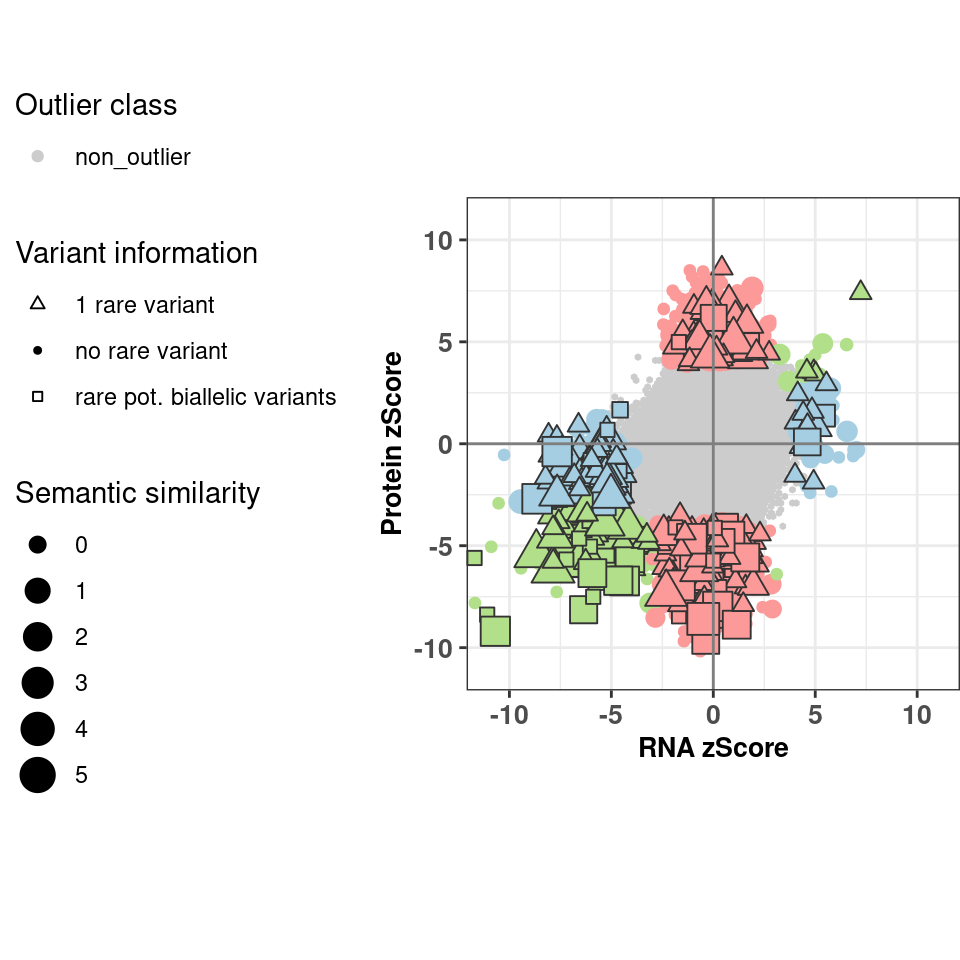

source(snakemake@input$config)
# Read integrated omics file
# rp <- readRDS("/s/project/mitoMultiOmics/multiOMICs_integration/processed_data/integration/patient_omics.RDS") %>% as.data.table()
rp <- readRDS(snakemake@input$patient_omics) %>% as.data.table()
rp <- rp[gene_class != "no data"]
Fig2c
#range <- c(rp[outlier_class != 'non_outlier' ]$RNA_ZSCORE, rp[outlier_class != 'non_outlier' ]$PROTEIN_ZSCORE)
Fig2d <- ggplot(data = rp[gene_detected == "RNA and protein detected"], aes(RNA_ZSCORE, PROTEIN_ZSCORE, color= outlier_class, shape= gene_class)) +
geom_hex(data = rp[gene_detected == "RNA and protein detected" & outlier_class == 'non_outlier' ],
aes(RNA_ZSCORE, PROTEIN_ZSCORE, fill= outlier_class, color= outlier_class), bins=100, show.legend = F) +
geom_point(data = rp[gene_detected == "RNA and protein detected" & outlier_class != 'non_outlier' & gene_class == "no rare variant"],
aes(RNA_ZSCORE, PROTEIN_ZSCORE, color = outlier_class,
shape= gene_class, size = Semantic_sim )) +
geom_point(data = rp[gene_detected == "RNA and protein detected" & outlier_class != 'non_outlier' & gene_class != "no rare variant" ],
aes(RNA_ZSCORE, PROTEIN_ZSCORE, fill= outlier_class,
shape= gene_class, size = Semantic_sim ), color= "grey20", show.legend = F) +
xlab("RNA zScore") +
ylab("Protein zScore") +
geom_vline(xintercept = 0, color = "grey50") +
geom_hline(yintercept = 0, color = "grey50") +
scale_color_manual(breaks = c("non_outlier","RNA_outlier","Protein_outlier", "RNA_Protein_outlier"),
values = outlier_colors)+
scale_fill_manual( values = outlier_colors)+
scale_shape_manual(values = c("no rare variant" = 20,
"1 rare variant" = 24,
"rare pot. biallelic variants" = 22) ) +
coord_fixed( xlim = c( -11 ,11), ylim = c( -11, 11 )) +
theme_bw()+
scale_size(range = c(2.5,6))+
labs(color='Outlier class') +
labs(size='Semantic similarity') +
labs(shape='Variant information') +
theme(axis.title.x= element_text( size=10, margin = NULL,face="bold"),
axis.title.y= element_text( size=10, margin = NULL,face="bold"),
axis.text.x = element_text(face="bold", size=10),
axis.text.y = element_text(face="bold", size=10),
legend.position="left",
plot.margin = margin(0, 0, 0, 0, "cm"))
Fig2d

pdf(snakemake@output$fig, # "/s/project/mitoMultiOmics/multiOMICs_integration/Figures/Fig2_d.pdf",
width = 5, height = 5, useDingbats=FALSE )
print(Fig2d)
dev.off()
## png
## 2
IyctLS0KIycgdGl0bGU6IEZpZ3VyZSAyZAojJyBhdXRob3I6IHNtaXJub3ZkCiMnIHdiOgojJyAgaW5wdXQ6CiMnICAtIGNvbmZpZzogJ3NyYy9jb25maWcuUicKIycgIC0gcGF0aWVudF9vbWljczogJ2BzbSBjb25maWdbIlBST0NfREFUQSJdICsgIi9pbnRlZ3JhdGlvbi9wYXRpZW50X29taWNzLlJEUyJgJwojJyAgb3V0cHV0OgojJyAgLSBmaWc6ICdgc20gY29uZmlnWyJGSUdVUkVfRElSIl0gKyAiL0ZpZzJfZC5wZGYiYCcKIycgb3V0cHV0OiAKIycgICBodG1sX2RvY3VtZW50OgojJyAgICBjb2RlX2ZvbGRpbmc6IGhpZGUKIycgICAgY29kZV9kb3dubG9hZDogVFJVRQojJy0tLQoKc291cmNlKHNuYWtlbWFrZUBpbnB1dCRjb25maWcpCgoKIyBSZWFkIGludGVncmF0ZWQgb21pY3MgZmlsZSAKIyBycCA8LSByZWFkUkRTKCIvcy9wcm9qZWN0L21pdG9NdWx0aU9taWNzL211bHRpT01JQ3NfaW50ZWdyYXRpb24vcHJvY2Vzc2VkX2RhdGEvaW50ZWdyYXRpb24vcGF0aWVudF9vbWljcy5SRFMiKSAlPiUgYXMuZGF0YS50YWJsZSgpCnJwIDwtIHJlYWRSRFMoc25ha2VtYWtlQGlucHV0JHBhdGllbnRfb21pY3MpICU+JSBhcy5kYXRhLnRhYmxlKCkKCgpycCA8LSBycFtnZW5lX2NsYXNzICE9ICJubyBkYXRhIl0KIycgIyMjIEZpZzJjCiMrIGZpZy53aWR0aD01LCBmaWcuaGVpZ2h0PTUKI3JhbmdlIDwtIGMocnBbb3V0bGllcl9jbGFzcyAhPSAnbm9uX291dGxpZXInIF0kUk5BX1pTQ09SRSwgcnBbb3V0bGllcl9jbGFzcyAhPSAnbm9uX291dGxpZXInIF0kUFJPVEVJTl9aU0NPUkUpCgpGaWcyZCA8LSBnZ3Bsb3QoZGF0YSA9IHJwW2dlbmVfZGV0ZWN0ZWQgPT0gIlJOQSBhbmQgcHJvdGVpbiBkZXRlY3RlZCJdLCBhZXMoUk5BX1pTQ09SRSwgUFJPVEVJTl9aU0NPUkUsIGNvbG9yPSBvdXRsaWVyX2NsYXNzLCBzaGFwZT0gZ2VuZV9jbGFzcykpICsKICBnZW9tX2hleChkYXRhID0gcnBbZ2VuZV9kZXRlY3RlZCA9PSAiUk5BIGFuZCBwcm90ZWluIGRldGVjdGVkIiAmIG91dGxpZXJfY2xhc3MgPT0gJ25vbl9vdXRsaWVyJyBdLCAKICAgICAgICAgICBhZXMoUk5BX1pTQ09SRSwgUFJPVEVJTl9aU0NPUkUsIGZpbGw9IG91dGxpZXJfY2xhc3MsIGNvbG9yPSBvdXRsaWVyX2NsYXNzKSwgYmlucz0xMDAsIHNob3cubGVnZW5kID0gRikgKwogIAogIGdlb21fcG9pbnQoZGF0YSA9IHJwW2dlbmVfZGV0ZWN0ZWQgPT0gIlJOQSBhbmQgcHJvdGVpbiBkZXRlY3RlZCIgJiBvdXRsaWVyX2NsYXNzICE9ICdub25fb3V0bGllcicgJiBnZW5lX2NsYXNzID09ICJubyByYXJlIHZhcmlhbnQiXSwgCiAgICAgICAgICAgICBhZXMoUk5BX1pTQ09SRSwgUFJPVEVJTl9aU0NPUkUsIGNvbG9yID0gb3V0bGllcl9jbGFzcywgCiAgICAgICAgICAgICAgICAgc2hhcGU9IGdlbmVfY2xhc3MsICBzaXplID0gU2VtYW50aWNfc2ltICkpICsKICAKICBnZW9tX3BvaW50KGRhdGEgPSBycFtnZW5lX2RldGVjdGVkID09ICJSTkEgYW5kIHByb3RlaW4gZGV0ZWN0ZWQiICYgb3V0bGllcl9jbGFzcyAhPSAnbm9uX291dGxpZXInICYgZ2VuZV9jbGFzcyAhPSAibm8gcmFyZSB2YXJpYW50IiBdLCAKICAgICAgICAgICAgIGFlcyhSTkFfWlNDT1JFLCBQUk9URUlOX1pTQ09SRSwgZmlsbD0gb3V0bGllcl9jbGFzcywgCiAgICAgICAgICAgICAgICAgc2hhcGU9IGdlbmVfY2xhc3MsIHNpemUgPSBTZW1hbnRpY19zaW0gKSwgY29sb3I9ICJncmV5MjAiLCBzaG93LmxlZ2VuZCA9IEYpICsKICB4bGFiKCJSTkEgelNjb3JlIikgKyAKICB5bGFiKCJQcm90ZWluIHpTY29yZSIpICsKICBnZW9tX3ZsaW5lKHhpbnRlcmNlcHQgPSAwLCBjb2xvciA9ICJncmV5NTAiKSArCiAgZ2VvbV9obGluZSh5aW50ZXJjZXB0ID0gMCwgY29sb3IgPSAiZ3JleTUwIikgKwogIHNjYWxlX2NvbG9yX21hbnVhbChicmVha3MgPSBjKCJub25fb3V0bGllciIsIlJOQV9vdXRsaWVyIiwiUHJvdGVpbl9vdXRsaWVyIiwgIlJOQV9Qcm90ZWluX291dGxpZXIiKSwKICAgICAgICAgICAgICAgICAgICAgdmFsdWVzID0gb3V0bGllcl9jb2xvcnMpKwogIHNjYWxlX2ZpbGxfbWFudWFsKCB2YWx1ZXMgPSBvdXRsaWVyX2NvbG9ycykrCiAgCiAgc2NhbGVfc2hhcGVfbWFudWFsKHZhbHVlcyA9IGMoIm5vIHJhcmUgdmFyaWFudCIgPSAyMCwgIAogICAgICAgICAgICAgICAgICAgICAgICAgICAgICAgICIxIHJhcmUgdmFyaWFudCIgPSAyNCwgCiAgICAgICAgICAgICAgICAgICAgICAgICAgICAgICAgInJhcmUgcG90LiBiaWFsbGVsaWMgdmFyaWFudHMiID0gMjIpICkgKwogIAogIGNvb3JkX2ZpeGVkKCB4bGltID0gYyggLTExICwxMSksICB5bGltID0gYyggLTExLCAgMTEgICkpICsgCiAgdGhlbWVfYncoKSsKICBzY2FsZV9zaXplKHJhbmdlID0gYygyLjUsNikpKwogIGxhYnMoY29sb3I9J091dGxpZXIgY2xhc3MnKSArCiAgbGFicyhzaXplPSdTZW1hbnRpYyBzaW1pbGFyaXR5JykgKwogIGxhYnMoc2hhcGU9J1ZhcmlhbnQgaW5mb3JtYXRpb24nKSArCiAgdGhlbWUoYXhpcy50aXRsZS54PSBlbGVtZW50X3RleHQoIHNpemU9MTAsIG1hcmdpbiA9IE5VTEwsZmFjZT0iYm9sZCIpLAogICAgICAgIGF4aXMudGl0bGUueT0gZWxlbWVudF90ZXh0KCBzaXplPTEwLCBtYXJnaW4gPSBOVUxMLGZhY2U9ImJvbGQiKSwKICAgICAgICBheGlzLnRleHQueCA9IGVsZW1lbnRfdGV4dChmYWNlPSJib2xkIiwgIHNpemU9MTApLAogICAgICAgIGF4aXMudGV4dC55ID0gZWxlbWVudF90ZXh0KGZhY2U9ImJvbGQiLCAgc2l6ZT0xMCksCiAgICAgICAgbGVnZW5kLnBvc2l0aW9uPSJsZWZ0IiwKICAgICAgICBwbG90Lm1hcmdpbiA9IG1hcmdpbigwLCAwLCAwLCAwLCAiY20iKSkKRmlnMmQKCnBkZihzbmFrZW1ha2VAb3V0cHV0JGZpZywgIyAiL3MvcHJvamVjdC9taXRvTXVsdGlPbWljcy9tdWx0aU9NSUNzX2ludGVncmF0aW9uL0ZpZ3VyZXMvRmlnMl9kLnBkZiIsICAKICAgIHdpZHRoID0gNSwgaGVpZ2h0ID0gNSwgIHVzZURpbmdiYXRzPUZBTFNFICkKcHJpbnQoRmlnMmQpIApkZXYub2ZmKCkKCg==